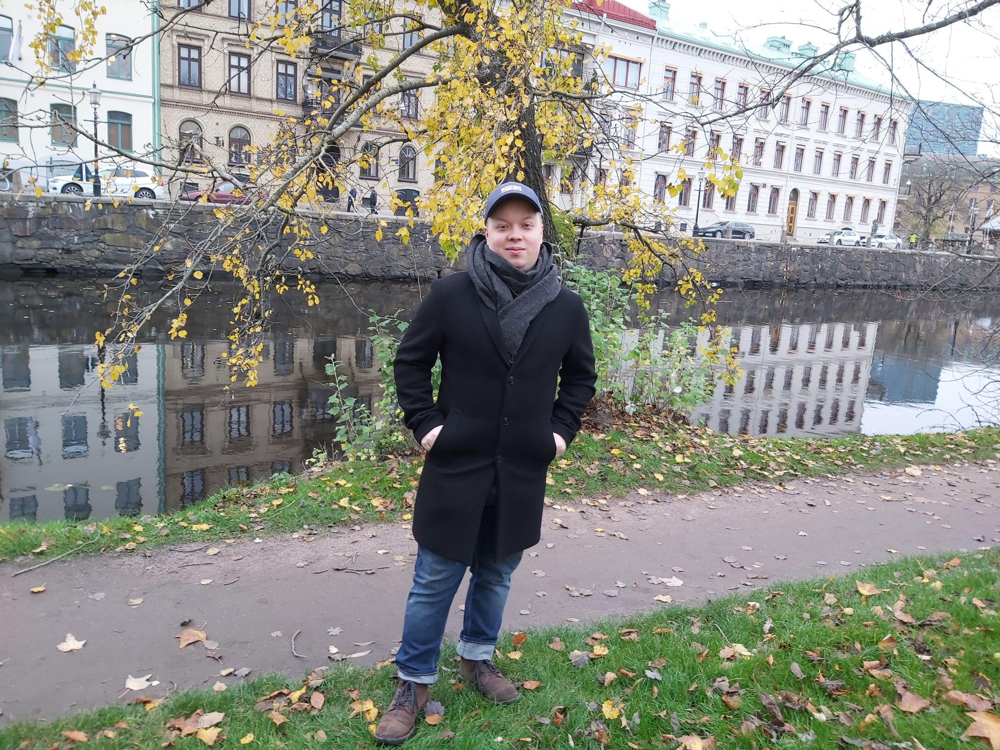
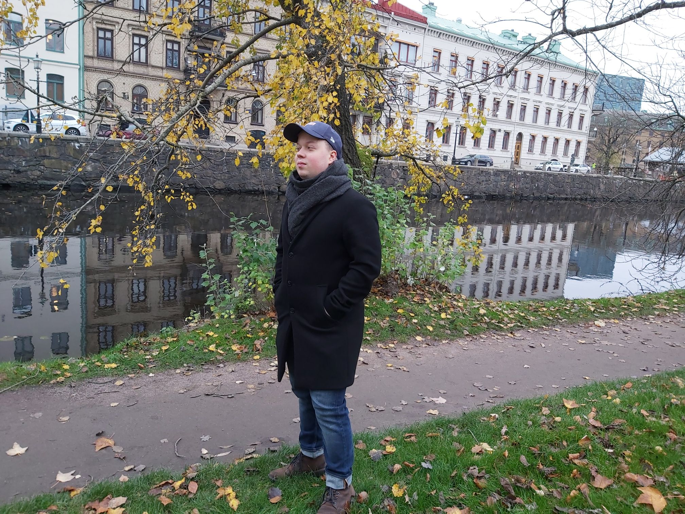

Jag är en kille på 22 år i Göteborg. Jag bor i Göteborg men är uppvuxen i Partille. Min arbetslivserfarenhet hitintills är som kajaktränare i min kajakklubb i Delsjön och sommarjobb som runner på John Scotts Stables, Fornello och Telia support. Jag tycker det är roligt att träffa nya människor. Jag har bl.a. studerat språk under fyra somrar utomlands. Tre gånger i England och en gång i Spanien. Det har varit fyra veckor varje gång. Jag pluggar på Medieinstitutet inom front end web. Jag gillar att gör hemsidor och hitta nya saker som kan hjälp mig gör hemsidor bättre och snabbare. Det som har varit mest spännande är att träffa tjejer och killar från olika länder i alla världsdelar. En sommar, det var i Paignton i England, delade jag rum med killar från Frankrike, Saudi Arabien och Spanien. Jag har lätt för att få kontakt med folk. Min morfar är 94 år och jag har en bra relation med honom och min farmor som bor i Skåne. Förutom att jag träffat många olika människor har jag lärt mig bra engelska och har inga problem med att prata språket. Jag har läst upp till och med engelska 7. Jag kan också lite spanska. På fritiden paddlar jag kajak och gymmar. Jag tycker om att prova olika sporter. Nu har jag börjat träna kamp med långsvärd . På fritiden spelar vi datorspel.
Jacob Vahlén 2020-11-11 19980708 Adler Salvius gata 11 411 11 Göteborg Telefonnummer 0701488333 Arbete Fornello Odinsplatsen Timanställd 2018 John Scott's Stable Kyrkogatan Timanställd 2018 Telia support 2019 Utbildning Grundskola Vallhamraskolan Avslutad 2014 Gymnasium NTI Avslutad 2017 Komvux Eng 7 Avslutad 2018 Medieinstitutet Front-end Pågår Övriga Meriter Hjälptränare kajakläger Juni 2015